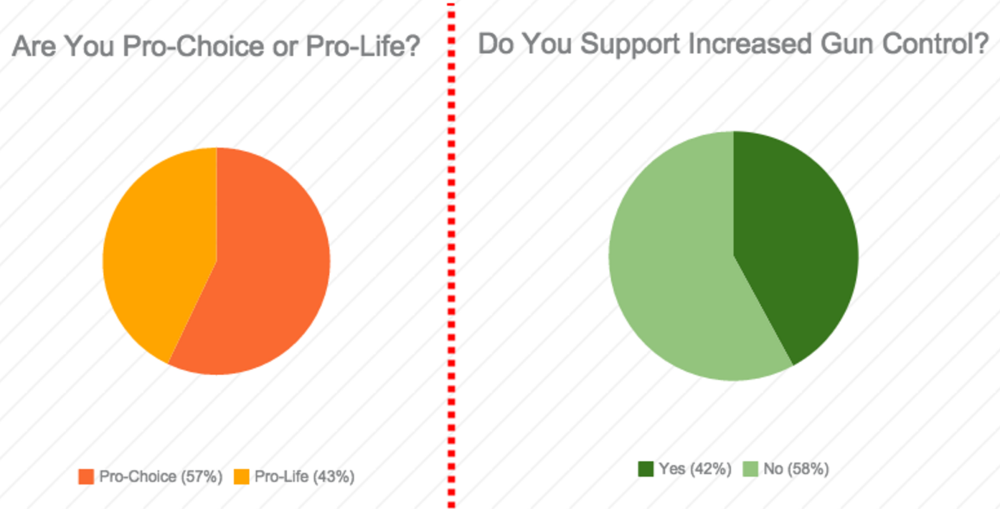

Donald Trump
Here are the popular opinions of the states in the Midwest. According to our research and data, they reflect previous polls.
The Midwest consists of the following states: North Dakota, South Dakota, Nebraska, Kansas, Minnesota, Iowa, Missouri, Wisconsin, Illinois, Indiana, Michigan, and Ohio. A majority of the states show they are mostly not in favor of gun control, pro-choice, and against immigration. This information is a general synopsis of the positions of the midwest, gathered from isidewith.com, ontheissues.org, Donald Trump’s personal campaign webpage, and people-press.org.
On the issue of gun control, throughout the 1990s and early 2000s less people have been in favor in the Midwest, meaning there has been an increase in support for gun rights. However, Illinois is an exception with about 50% in favor of gun rights and 50% in favor of gun control according to isidewith.com. The site also shows people in Minnesota are divided on the issue as well, however most are not in favor of gun control.
Donald Trump believes it is important to defend the rights of law-abiding gun owners. In 2000, Trump said that both Democrats and Republicans are wrong about guns. This means he thought some restrictions were fine, although generally supported gun rights. He doesn’t approve many restrictions, currently believes we need to fix how we do background checks.
On the issue of abortion, the majority of the states are divided. In some states the percentages in-favor and not in-favor of abortions are close. For example, South Dakota is 50% pro-choice and 50% are pro-life. Overtime the Midwest has grown more opposed to abortion according to isidewith.com. In the mid-1990s, people-press.org found that 55% of people in the Midwest view abortion as a legal practice in most cases and 42% saw it as illegal practice in most cases. According to people-press.org which polled data from 2012-2013, 47% of the Midwest believes abortion should be illegal in most cases and 47% believes abortion should legal in most cases.
Donald Trump is pro-life, however claims he has evolved throughout his lifetime. Specifically, Trump believes there should be bans on late abortions and exceptions for rape, incest, or health according to ontheissues.org. In 2011, Trump claimed he wanted to fight Obamacare abortion funding.
A majority of the Midwest are proponents for kids of illegal immigrants being granted citizenship. This shows voters would most likely disagree with Donald Trump who is a major supporter of border control. He is looking to build a wall to prevent illegal immigrants from Mexico to get into the United States. In September 2015, Trump stated the United States is the only country “dumb enough for birthright citizenship” according to ontheissues.org. His views directly oppose the majority of the Midwest who are adamant about citizenship for kids of illegal immigrants.